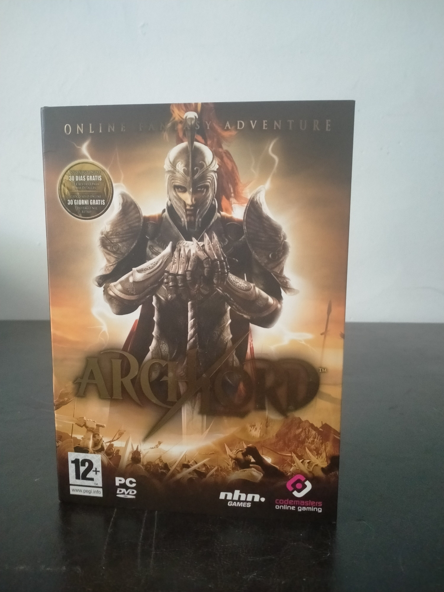

Ficha #000000
ArchLord
ArchLord es un juego de rol multijugador masivo en línea de fantasía desarrollado por NHN Games y publicado en Europa por Codemasters Online Gaming en 2006. Ambientado en el continente de Chantra, permite crear personajes pertenecientes a tres razas y ocho clases, formar gremios, participar en asedios y competir por convertirse en el único ArchLord de cada servidor. Su propuesta se apoyaba especialmente en el combate entre jugadores, las guerras de gremios y un mundo persistente construido con tecnología RenderWare. Esta edición física europea en formato DVD Case con funda exterior de cartón, para Windows 2000 y Windows XP, presenta textos exteriores en castellano e italiano, manual bilingüe y treinta días de juego online incluidos. El servicio pasó posteriormente a Webzen y sus servidores oficiales terminaron cerrando en 2014, circunstancia esencial para documentar y preservar esta edición dependiente de infraestructura remota. ([company.webzen.com][1])
- Formato
- DVD Case
- Plataforma
- Win2000 WinXP
- Género
- Rol multijugador masivo en línea Fantasía Combate jugador contra jugador Mundo persistente
- Serie
- Todos DVD Case
- Desarrollador
- NHN Games Corporation
- Distribuidor
- Codemasters Online Gaming, Atari Ibérica
- EAN
- 5024866331578
Contenido de la edición
- Funda exterior de cartón
- DVD-ROM
- Manual en castellano e italiano
Preservación
- Protección
- Otro
- Formato recomendado
- ISO
- Jugable en virtualización
- No determinado
Crear una imagen ISO íntegra del DVD-ROM y digitalizar la caja, el manual y cualquier código de registro que conserve el ejemplar. Deben documentarse también la versión del cliente, los instaladores y los parches disponibles. La imagen del soporte permite preservar el software distribuido, pero no restituye por sí sola la experiencia jugable: ArchLord depende de autenticación e infraestructura de servidor y el servicio oficial cerró definitivamente en 2014. ([Engadget][2])